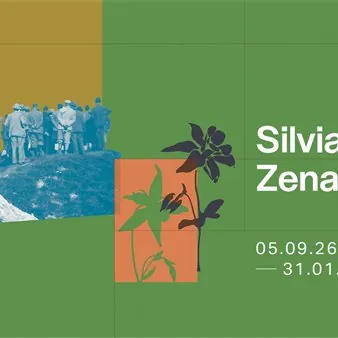

da sab 5 set a dom 31 gen
Silvia Zenari. La memoria degli erbari
In vista di Pordenone Capitale italiana della Cultura 2027, il Museo civico di Storia Naturale di Pordenone, in collaborazione con il Museo botanico e l’Orto botanico dell’Università di Padova, ricorda a 70 anni dalla morte la naturalista Silvia Zenari (1895-1956), a cui il…
 Indicazioni
Indicazioni
- Costi e prenotazioni
- Costo non indicato · Prenotazione non indicata
- Programma
- Programma da verificare. Apri la fonte ufficiale per orari e possibili aggiornamenti.
- In caso di maltempo
- Nessuna indicazione specifica pubblicata.
- Note
- Acquisito automaticamente dalla fonte.
L’EVENTO
Descrizione completa
Il concept è curato dalla dott.ssa Valentina Boscariol, dottoranda nell’ambito del Dottorato di Interesse Nazionale in Biodiversity, promosso da National Biodiversity Future Centre – NBFC con sede amministrativa presso l’Università di Palermo e sede operativa presso l’Università di Padova; la ricerca è condotta con la supervisione della prof.ssa Elena Canadelli, direttrice scientifica del Museo botanico presso l'Orto botanico, nonché docente presso l’Università di Padova. La realizzazione della mostra ha previsto il coinvolgimento di Enti, Associazioni e privati del Friuli che hanno direttamente o indirettamente collaborato o conosciuto Silvia Zenari e hanno contribuito nel tempo a preservarne la memoria. Oltre quindi a diverse realtà scientifiche collegate all'Università di Padova, hanno partecipato attivamente, attraverso prestiti e contributi preziosi:
Museo Civico di Storia Naturale di Trieste, Museo dell’ex Centrale Idroelettrica “Antonio Pitter” di Malnisio, Museo Friulano di Storia Naturale di Udine, Associazione Storica Società Operaia di Mutuo Soccorso ed Istruzione di Pordenone A.P.S., Club Alpino Italiano (CAI) di Pordenone, Società Geologica Italiana, Famiglia Pitter, Famiglia Quaia e Dott. Adriano Noacco.
Orari: giovedì e venerdì 9:00-13:00 / sabato e domenica 13:00-19:00 (per aperture straordinarie/variazioni sugli orari di apertura consultare il sito
Informazioni: 0434 392950 / museo.storianaturale@comune.pordenone.it
In vista di Pordenone Capitale italiana della Cultura 2027, il Museo civico di Storia Naturale di Pordenone, in collaborazione con il Museo botanico e l’Orto botanico dell’Università di Padova, ricorda a 70 anni dalla morte la naturalista Silvia Zenari (1895-1956), a cui il Museo pordenonese è intitolato. Grazie a una selezione di fogli d’erbario, libri, documenti e immagini del tempo, la mostra racconta la storia e gli studi di questa appassionata botanica, tra le poche attive nelle istituzioni scientifiche italiane di metà Novecento, evidenziando il suo stretto legame con il territorio friulano. Attraverso la sua vita e la sua opera, la mostra approfondisce il tema ancora molto attuale del ruolo delle donne nella scienza e il grande valore degli erbari con piante essiccate per comprendere la biodiversità e la natura, tra passato e presente. Immergersi nella vita di Silvia Zenari, ricostruire il suo contributo scientifico, seguirla nelle sue erborizzazioni per valli e per monti, consente così di fare un viaggio nella storia del Novecento, nel “suo” Friuli e nello studio delle piante attraverso gli erbari.
IL PROGRAMMA
Programma e orari
Appuntamenti raccolti dalle fonti elencate. Dove manca un orario, non è ancora disponibile in questa scheda.
Programma pubblicato
- Dal 2026-09-05 al 2027-01-31
INFORMAZIONI UTILI
Prima di partire
- Controllare la fonte prima di partire.
ORGANIZZAZIONE